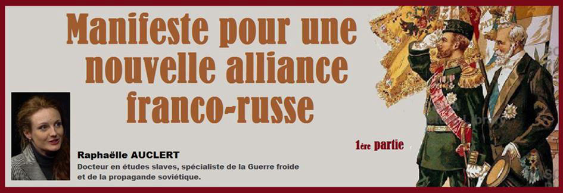
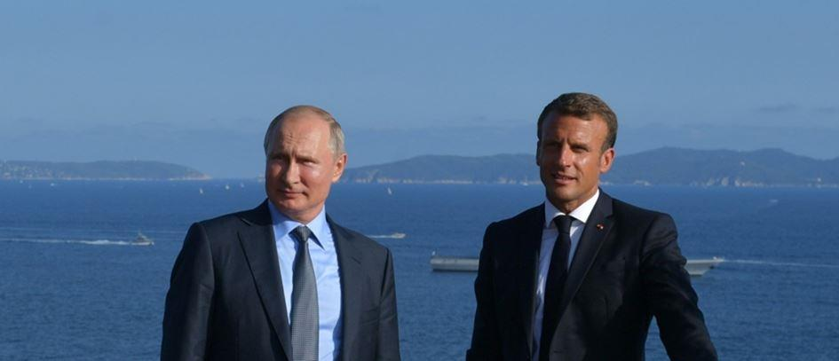
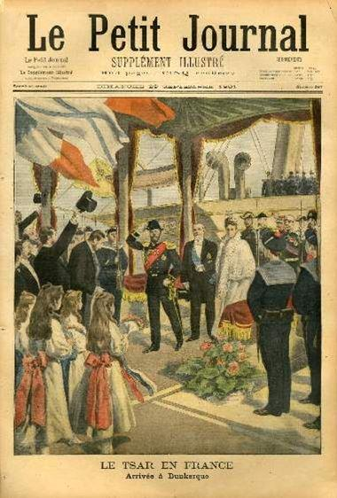
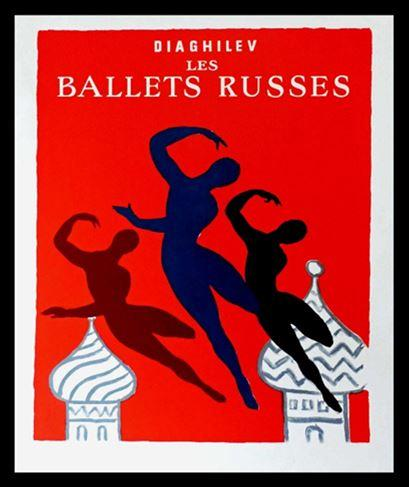
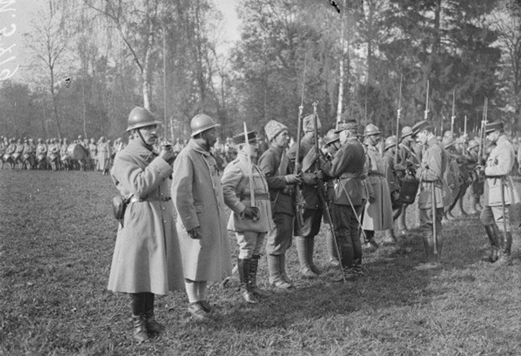
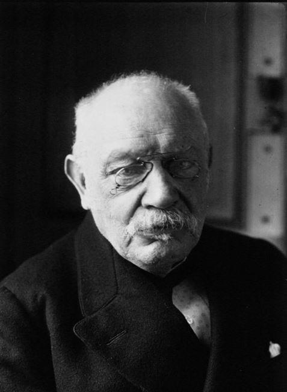
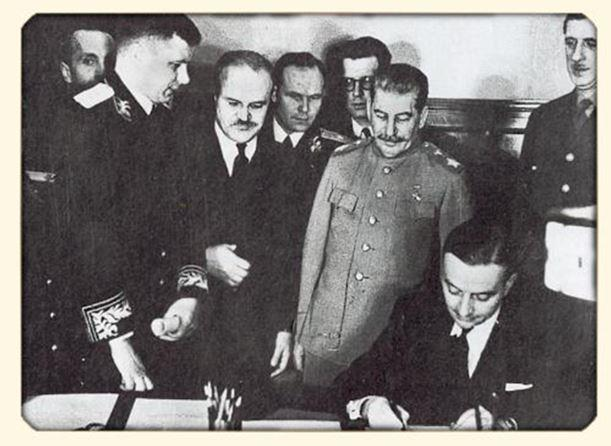
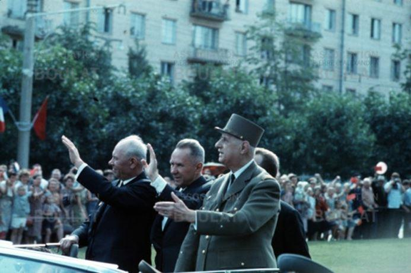
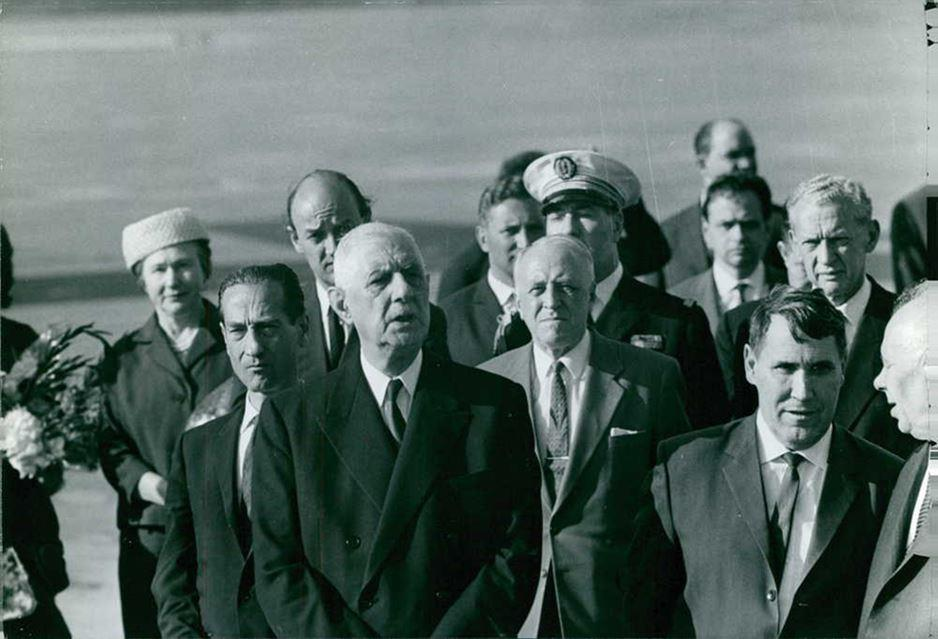
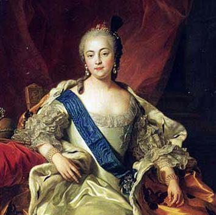

Manifeste pour une nouvelle alliance franco-russe (1ère partie)
par Raphaëlle AUCLERT

« L’alliance de la France et de la Russie est chose tellement naturelle qu’il y aurait folie à ne pas s’y attendre, car, de toutes les Puissances, ce sont les seules qui, par leur situation géographique et par leurs visées politiques, renferment le moins d’éléments d’hostilité, car n’ayant pas d’intérêts qui se combattent nécessairement. »
Alexandre III, tsar de Russie
Le début de l’année 2020 a été marqué par une canonnade de déclarations peu amènes envers la Russie. Le 13 février, la Ministre des Armées a annoncé l’envoi en 2021 de soldats à la frontière russe, en Estonie. Le 14 février, Le Monde publiait un article revenant sur l’audacieuse main tendue de Paris envers une Russie malgré tout « si proche, si nuisible » et où « le mensonge ruisselle du haut en bas de l’appareil [politique]. »1 Le lendemain, c’était le président qui lançait un avertissement depuis la conférence de Munich sur la sécurité : « la Russie va continuer à essayer de déstabiliser les démocraties occidentales ». Oublié, l’intermède amical de Brégançon d’août dernier, où le chef de l’État appelait de ses vœux « une architecture de sécurité et de confiance » avec le Kremlin ?
Il semble bien en effet que Macron ait tourné le dos à son voisin de l’est pour se ranger dans le giron de l’OTAN, avec un empressement qui laisse à penser que ce choix est une évidence. Or, c’est loin d’en être une. Bien au contraire, quels que soient les éléments de langage récités avec ferveur par l’Élysée, il s’inscrit à contre sens de toute la diplomatie traditionnelle de la France et de la défense de ses intérêts. A l’approche des festivités prévues à Moscou marquant les soixante-quinze ans de la victoire sur le nazisme, à laquelle le président américain a d’ores et déjà annoncé qu’il n’assisterait pas, il est crucial que la France réponde elle présente à l’invitation de Poutine et renouvelle sa fidélité passée dans le but salutaire de rester fidèle à elle-même.
Une tradition d’amitié millénaire qui culmine avec l’alliance franco-russe de 1892
L’amitié franco-russe remonte à près de mille ans, lorsque le roi Henri Ier épousa Anne de Kiev, fille de Iaroslav le Sage et grand-prince de Kiev. Fait notable, le mariage eut lieu en 1051, soit trois ans avant le Grand schisme d’Orient ; de par leur foi respective, les époux dépendaient donc tous les deux de l’Église indivise et leur union était autant politique que religieuse. Anne donna un héritier à la dynastie capétienne, Philippe Ier, qui régna de 1060 à 1108. Au tournant du XVIIIème siècle, le tsar Pierre Ier engagea une politique volontariste de modernisation de la Russie ; il voulait « ouvrir une fenêtre sur l’Europe » pour en importer les innovations techniques et les prouesses artistiques. Il entreprit alors plusieurs voyages en Europe occidentale afin de s’allier avec les chefs d’État étrangers contre l’Empire ottoman, de découvrir la culture et les mœurs locales et de recruter des spécialistes, en particulier dans le domaine de la marine. En 1717, le tsar fut accueilli à Versailles par Louis XV, alors âgé de sept ans ; on raconte que, faisant fi du protocole, le colosse russe de deux mètres aurait spontanément pris l’enfant-roi dans ses bras. Son séjour en France s’avéra fructueux en lui permettant notamment de découvrir l’Académie des sciences ou les manufactures des Gobelins, dont il ordonna la création de répliques à son retour ; de même, le pensionnat de jeunes filles de Saint-Cyr lui inspira l’idée de l’Institut Smolny, qui ne vit le jour que sous Catherine II. Un siècle après, lors du Traité de Vienne, le tsar Alexandre Ier, qui venait pourtant de subir l’invasion napoléonienne, pesa de tout son poids dans les négociations pour que l’intégrité de la France fût maintenue.
Mais il faut attendre l’alliance franco-russe pour que la coopération entre les deux pays prenne sa pleine mesure. Conclue en 1892 dans le but de contrebalancer l’influence allemande, elle perdura jusqu’en 1917. On se souvient que jusqu’en 1890, Bismarck avait maintenu la France isolée au moyen de l’Entente des trois empereurs (allemand, russe et austro-hongrois) de crainte qu’elle ne prenne sa revanche sur la défaite de Sedan. Or, après la démission du chancelier allemand, le kaiser Guillaume II ne reconduisit pas cette entente et créa la Triple Alliance avec l’Autriche et l’Italie, poussant la France et la Russie à signer une convention militaire secrète. Il s’agissait d’une convention purement défensive qui prévoyait une mobilisation commune en cas d’attaque d’un des deux pays par un des membres de la Triple Alliance ; en particulier, « les forces devaient s’engager (…) de manière à ce que l’Allemagne ait à lutter à l’est et à l’ouest ». La convention s’appliqua à l’été 1914 : lorsque la Russie déclara la mobilisation contre l’Autriche-Hongrie puis l’Allemagne, la France suivit son exemple. A contrario, la signature du traité de Brest-Litovsk par Lénine en 1918, dont un des effets fut de soulager les Allemands sur le front de l’est, fut perçue par certains dirigeants français comme une trahison. De 1900 à 1913, les chefs d’État-major ne tinrent pas moins de neuf réunions pour coordonner des plans en cas d’attaque venant de pays de la Triple Alliance, mais aussi de l’Angleterre.
L’amitié franco-russe donna lieu également à des visites mutuelles d’escadres ; lors de la visite de la flotte française à Cronstadt, le grand-duc Alexis, Grand Amiral et commandant suprême de la flotte organisa un somptueux banquet en l’honneur de l'amiral Gervais et des commandants de navires ; deux ans plus tard, l’amiral Avellan rendit sa visite à la flotte française à Toulon et à Paris, où le président de la République et le ministre de la marine les accueillirent par des festivités grandioses.
L’alliance se traduisit par six visites officielles de chefs d’État (par exemple les voyages de Nicolas II à Paris et de Félix Faure à Saint-Pétersbourg).
Symboles de ce rapprochement, le tsar posa la première pierre du pont Alexandre III sur la Seine et le président français celle du pont de la Trinité sur la Neva.
En outre, plusieurs milliers d’artisans, commerçants, ingénieurs et instructeurs militaires français s’établirent dans les grandes villes de l’empire russe, tandis que Serge Diaghilev, avec sa compagnie Les Ballets russes, faisait découvrir aux Parisiens la musique, la danse et la culture russes. Enfin, le dernier volet de la coopération était d’ordre économique : si l’on additionne l’emprunt aux particuliers et les transferts dans des sociétés par actions russes, c’est au total un quart des investissements français à l’étranger qui était destinés à la Russie afin de moderniser son armée et ses infrastructures.
Ainsi, l’alliance franco-russe permit un renforcement sécuritaire mutuel et de riches échanges économiques et culturels : « L’alliance avec la Russie est bienfaisante et nécessaire, » résumait l’historien et journaliste Jacques Bainville.2 Toutefois, le désastre de la guerre russo-japonaise et la révolution de 1905 d’une part, et l’affaire Dreyfus d’autre part, suivie comme on le sait d’une purge drastique dans l’armée française, exposèrent les deux nations à des désordres qui en vinrent à briser l’élan originel de l’alliance. En effet, à partir des années 1900, la volonté de coopération à la tête des deux États demeure mais les soubresauts qui agitaient leur politique intérieure en compromirent l’exécution.
L’exemple du corps expéditionnaire russe est éclairant à cet égard. Un an après le début de la Première Guerre mondiale, le général Joffre demanda l’envoi d’un contingent russe pour pallier les pertes vertigineuses subies par l’armée française. En échange de livraisons de fusils, Nicolas II lui mit à disposition 45000 hommes. Mais en 1917, l’atmosphère de mutineries due à la stratégie de l’offensive à outrance menée par le général Nivelle et le manque de reconnaissance ressenti par les soldats russes furent à l’origine de troubles. A cela s’ajoutèrent les divisions entre loyalistes et partisans de la révolution de février, qui voulaient rentrer en Russie pour soutenir l’émancipation du prolétariat, faisant craindre aux cadres de l’armée française un risque de contagion des troupes par les idées communistes. Ce mélange instable explosa lors de la mutinerie des soldats russes de la Courtine à l’été 1917, qui mit aux prises 16000 hommes et fut réprimée à coups de canon ; le bilan officiel fit état de douze morts mais le chiffre d’une centaine de victimes est avancé par certains historiens. Les autres mutins furent mis aux arrêts, envoyés aux travaux forcés ou, pour la grande majorité, contraints de devenir des travailleurs militaires. 400 officiers et sous-officiers de l’armée impériale s’engagèrent en revanche dans une légion russe de volontaires qui s’illustra aux côtés de l’armée française et reçut le titre de Légion d’honneur russe.
Mais malgré les exploits et les sacrifices consentis, la Russie désormais bolchevique ne fut pas conviée à la table des vainqueurs lors du Traité de Versailles. Côté français, la purge de l’armée était achevée, conséquence de luttes intestines et de l’hécatombe de la guerre. Dès lors, l’Etat-major de la République française nourrit une hostilité atavique et bien souvent irrationnelle envers la Russie, qui ne semble pas avoir épargné le président français actuel. L’alliance franco-russe était révolue.
Depuis le Traité de Versailles, une relation en déshérence
Après avoir soutenu le général tsariste Dénékine et envisagé une intervention en Ukraine qui avorta face au rejet de la population locale, le gouvernement français se résigna en 1924 à reconnaître l’Union soviétique et à y envoyer un ambassadeur. Mais il refusa de conclure avec elle un accord commercial, en conditionnant les échanges à des considérations politiques, notamment le règlement de la question des dettes russes dénoncées par Lénine en 1918. Par manque de pragmatisme, la France ne profita donc pas des années de la NEP (1921-1928) pour s’implanter sur le marché soviétique et accumula du retard par rapport à ses concurrents. Quand, en 1931, elle se décida enfin à signer un accord commercial, la crise était déjà proche et l’heure n’était plus à combler ce retard.3
Devant la montée du péril nazi, la France et l’Union soviétique sentirent la nécessité d’enserrer à nouveau l’Allemagne dans un double front, comme aux grandes heures de l’alliance franco-russe. Jules Cambon, ambassadeur à Washington, Madrid et Berlin, et participant aux négociations du Traité de Versailles, résuma cette stratégie : « Il n’y a qu’une politique pour la France : l’alliance à l’est avec la Russie contre l’Allemagne. Je hais les soviets, mais si j’étais au pouvoir, je m’allierais avec eux. Chaque fois que la France s’est écartée de cette politique traditionnelle, ce fut une catastrophe. »4 Elle donna lieu au traité franco-soviétique d’assistance mutuelle de 1935, négocié par le ministre des Affaires étrangères Louis Barthou et son homologue Maxime Litvinov.
Après l’assassinat de Barthou, son successeur Pierre Laval, un anticommuniste farouche, signa le traité mais se garda de le faire appliquer ; du reste, la diplomatie soviétique soupçonnait Laval de ne s’être rapproché de Moscou que pour inquiéter Berlin et augmenter le prix de sa fidélité. Et force est de constater qu’il a toujours refusé de discuter les termes de l’accord complémentaire, qui devait déterminer les modalités pratiques de la coopération. Précisons que le traité était conçu comme la première étape d’un système de sécurité d’Europe de l’est, incluant par la suite l’Allemagne, la Tchécoslovaquie, la Pologne et les pays baltes. On peut regretter que l’application du traité se heurtât à l’obstruction de l’État-major et du ministre de la Défense Edouard Daladier, qui jugea préférable de signer les funestes accords de Munich de 1938 avec Neville Chamberlain, Benito Mussolini et Adolf Hitler.
Pendant la Deuxième Guerre mondiale, l’Escadron de chasse Normandie-Niémen des Forces aériennes françaises libres fut engagé à partir de 1942 sur le front de l’est aux côtés des Soviétiques. En décembre 1944, le gouvernement provisoire français dirigé par le général De Gaulle se rendit à Moscou pour prendre contact avec Molotov et Staline.5 Les deux pays projetaient la signature d’un pacte d’alliance de vingt ans destiné, comme à l’accoutumée, à les prémunir contre toute nouvelle agression allemande.
Le pacte fut signé mais, désormais, le rapport de force avait changé : le concert des nations européennes du XIXème siècle avait fait place au monde bipolaire.
Suivant un curieux raisonnement, les dirigeants de la France, qui avait été défaite en mai 1940, tinrent rigueur à la Russie de son propre déclassement : leurs principaux griefs étaient de ne pas avoir été conviés aux conférences des vainqueurs de Yalta et Potsdam, ainsi que la perte de l’empire colonial. Écoutons à ce sujet l’ambassadeur Garreau, en poste à Moscou à l’époque : « Quelques semaines s’étaient écoulées depuis la signature du pacte lorsque fut réunie la conférence de Yalta. Il était du devoir de l’Union soviétique d’exiger que la France participât à cette conférence. Ne l’ayant pas fait, elle a violé ses engagements. II en a été de même à la conférence de Potsdam. Répudiation bien plus grave encore du pacte d’alliance, que la reconnaissance par l’Union soviétique du gouvernement insurrectionnel de Ho Chi-Minh en Indochine française. » Mais était-il bien fondé de reprocher à l’Union soviétique l’impéritie des gouvernants de la Troisième République qui, seule, avait mené le pays à la débâcle ? De plus, l’ambassadeur Garreau et ses amis semblent avoir vite oublié un point fondamental : ce fut Staline qui insista, contre l’avis de Churchill et de Roosevelt, pour que la France dispose de son siège de membre permanent au Conseil de sécurité de l’ONU.
Un autre point d’incompréhension fut la politique d’influence menée par l’Union soviétique dans les pays d’Europe de l’est, en particulier de la Pologne. Lors de la visite de De Gaulle en 1944, les Soviétiques lui demandèrent la reconnaissance de jure du gouvernement polonais institué à Lublin sous la protection de l’armée rouge, à laquelle le général opposa un refus catégorique. Pourtant, après le cataclysme de la guerre, fallait-il s’étonner que les Soviétiques veuillent garantir leur sécurité par la formation d’un glacis de régimes non hostiles à leur frontière orientale ? En outre, une fois de plus, la partie française raisonnait selon les catégories datées du XIXème siècle de nations souveraines et d’équilibre européen ; c’était refuser de voir que la logique impériale des blocs était déjà à l’œuvre. En effet, même si les premières escarmouches de la Guerre froide datent seulement de la fin 1945 - début 1946, une rivalité était déjà perceptible entre les armées libératrices ; l’enjeu était de renforcer leurs positions afin de disposer de la légitimité nécessaire pour imposer leurs exigences dans l’ordre européen d’après-guerre. Ignorer cette tension, qui deviendrait palpable à Yalta et Potsdam, et rester attaché à l’idée d’une Pologne souveraine et neutre relevait certes d’une belle et généreuse intention, mais condamnait par avance toute négociation à l’échec et la France à l’isolement diplomatique.
En définitive, lors de ses années au pouvoir, de 1958 à 1969, le général De Gaulle n’a cessé de faire comme si le poids de la France était resté inchangé depuis le XIXème siècle, voire depuis 1815, avant qu’elle ne perde deux guerres et n’en gagne une au prix du sacrifice de toute une génération. A l’époque où elle dominait encore l’Europe, ses alliances et ses campagnes militaires redessinaient les frontières et les hiérarchies entre les nations. L’amitié de la France était un privilège chaudement convoité et son hostilité avait valeur d’anathème.
Héritier de cette tradition, le général De Gaulle était parfaitement au fait des intérêts français et avait fait de son slogan « l’Europe de l’Atlantique à l’Oural » l’étendard de la liberté et de la fierté gauloises. Voici ce qu’il disait de la Russie :

« La décision funeste de Napoléon d’attaquer Alexandre Ier est la plus lourde erreur qu’il ait commise. Rien ne l’y forçait. C’était contraire à nos intérêts, à nos traditions, à notre génie. C’est de la guerre entre Napoléon et les Russes que date notre décadence. Il est de l’intérêt de la France d’avoir de bons rapports avec la Russie. Ça a toujours été une période faste de notre histoire, quand la France était en bonnes relations avec les Russes. »6
Cependant, tout en reconnaissant une décadence française, il n’en a pas moins mené une diplomatie d’État souverain dont la France, hélas, n’avait plus les moyens. Et plus les résultats démentaient ses illusions, plus il s’enhardissait. Notamment, suite au fiasco du traité de l’Elysée7, De Gaulle a enchaîné les protestations d’indépendance et de grandeur françaises : en mars 1966, il fit sortir la France du commandement intégré de l’OTAN ; en septembre de la même année, il prononça à Phnom Penh un discours où il tançait les Américains sur leur action au Vietnam ; en 1967, il lança la fameuse exclamation « Vive le Québec libre ! ». C’est dans cette perspective qu’il convient d’aborder sa visite en Union soviétique de juin 1966 qui, pour aussi sincère et enthousiaste qu’elle fût de part et d’autre, ne dépassa pas les déclarations incantatoires. Mais, après tout, n’est-ce pas dans cet aveuglement obstiné sur la relégation de la France au rôle de satellite du bloc de l’ouest que réside à la fois la splendeur et la misère du mythe gaullien ?

Arrivée du Général De Gaulle à l’aéroport de Novossibirsk le 23 juin 1966
Dans les faits, depuis les débuts de la Guerre froide, il faut bien reconnaître qu’en dehors de postures de circonstance dictées par l’agenda international, la France vassale des États-Unis et de l’OTAN n’a plus mené de politique souveraine envers la Russie. Un conseiller de l’Élysée parlait pudiquement au journaliste du Monde évoqué en introduction d’une rupture de l’« équilibre transactionnel entre l’UE et la Russie » ; le lecteur appréciera l’euphémisme qui, du reste, n’envisage même pas de relation bilatérale propre entre la France et la Russie. Détail révélateur, les ambassadeurs français à Moscou ignorent la langue de Pouchkine, donnant une preuve s’il en fallait encore que l’Élysée n’a littéralement aucune intention de parler la même langue que le Kremlin. Cette mauvaise habitude remonte à loin : le dernier ambassadeur russophone était Barthélémy de Lesseps et il avait dû quitter Moscou avec Napoléon. C’était en 1812.
Le défi eurasien en 2020 : le coq, l’ours et le Grand Echiquier
Mais revenons à notre époque. Quelle est aujourd’hui la pertinence d’une nouvelle alliance franco-russe ? Et quelle forme doit-elle prendre ? Nous avons rappelé plus haut que l’amitié franco-russe avait été scellée par l’union religieuse du roi de France avec Anne de Kiev, quelques années à peine avant le Grand schisme d’Orient. Depuis ce moment et malgré les siècles, la proximité culturelle entre les deux pays ne s’est pas démentie. Citons quelques-uns de leurs traits communs : la matrice chrétienne des cultures nationales qui a inspiré certaines valeurs (charité envers les faibles, humilité, éthique chevaleresque et une certaine forme de matriarcat dérivé du culte de la Vierge), les origines essentiellement paysannes de la population, une vocation messianique (qui s’exprima entre autres dans les croisades, l’épopée napoléonienne ou l’utopie communiste) et un État centralisé fort dirigé par un monarque (le présidentialisme de la Cinquième République ne fait ici pas exception à la règle).
Cette homogénéité morale et spirituelle est en soi le gage d’une relation étroite, efficace et confiante, qui s’illustra autrefois dans un dialogue littéraire fourni. Le passage des frontières par Dostoïevski, Tourgueniev, Tchékhov, Alexandre Dumas ou Balzac fut rendu possible précisément grâce à ce socle commun de valeurs en même temps qu’il l’enrichissait d’un nouvel imaginaire partagé par les deux peuples.
De plus, n’oublions pas que depuis le XVIIIème et le règne d’Elisabeth Ière, le français était la langue de la cour et des élites intellectuelles, qui le parlaient souvent mieux que le russe. Là non plus, les années n’ont en rien amoindri la francophilie des Russes – ni la russophilie des Français. Pour se convaincre de ce tropisme français, il suffit d’évoquer la réponse de Poutine au journaliste du Financial Times8 qui lui demandait quel chef d’État, parmi ceux qu’il avait côtoyés, avait suscité son admiration.
Et le président russe de prononcer sans hésiter le nom de Jacques Chirac, dont, selon ses termes, l’érudition, l’indépendance d’esprit et la courtoisie avaient produit sur lui une forte impression. Il n’est pas à exclure que cette perception tienne autant à la personne-même de l’ancien président de la Cinquième République qu’aux préjugés favorables que Poutine a de la France. Un autre exemple récent nous a été donné lors de l’incendie de Notre Dame : Poutine avait alors déclaré que « tous les Russes avaient regardé cette tragédie avec les larmes aux yeux, […] que cet incendie était une douleur dans le cœur des Russes » et avait sur-le-champ proposé d’envoyer ses meilleurs spécialistes pour participer à la reconstruction.
Imbus de morgue et de suspicion, nos dirigeants se sont montrés ignares et lamentables en dédaignant avec constance cette franche amitié au profit de partenaires ô combien moins bénéfiques, voire nocifs aux intérêts de la France.
Fin de la première partie.
Retrouvez la seconde partie dans notre prochain numéro.
R.A.
NOTES ET RÉFÉRENCES
1 Piotr Smolar, « La campagne russe d’Emmanuel Macron : retour sur le pari diplomatique le plus incertain du quinquennat », Le Monde, 14 février 2020.
2 Jacques Bainville, « L’alliance russe », L’Action française, 30 juillet 1908.
3 Stanislas Jeannesson, « La difficile reprise des relations commerciales entre la France et l’URSS (1921-1928) », Histoire, économie et société / Année 2000 / 19-3 / pp. 411-429.
4 Georgette Elgey, La République des contradictions, 1951-1954, Fayard, 1968, pp. 292-293.
6 Voir le récit des négociations par l’ambassadeur à Moscou de l’époque Roger Garreau : « Comment fut signé le pacte franco-soviétique », Le Monde diplomatique, janvier 1955, pp. 1 et 4.
7 4 janvier 1965. Alain Peyrefitte, C’était de Gaulle, Paris, Gallimard, 2002, p. 910.
8 En 1963, De Gaulle avait conclu avec le chancelier allemand Konrad Adenauer un traité d’amitié franco-allemand qui avait pour buts de lier étroitement l’Allemagne et la France et de détacher celle-ci de la protection américaine dans la perspective d’une Europe indépendante de la tutelle des États-Unis. Mais, cinq mois plus tard, le Bundestag ratifia le traité après y avoir ajouté un préambule qui en ruinait toutes les promesses : affirmation d’une association étroite entre l’Europe et les États-Unis, admission de la Grande-Bretagne au traité, défense sous l’égide de l’OTAN et relations commerciales facilitées avec la Grande-Bretagne et les États-Unis. Furieux, voici ce qu’aurait déclaré le président français en découvrant le préambule : « Les Américains essaient de vider notre traité de son contenu. Ils veulent en faire une coquille vide. Tout ça, pourquoi ? Parce que les politiciens allemands ont peur de ne pas s’aplatir suffisamment devant les Anglo-Saxons ! Ils se conduisent comme des cochons ! Ils mériteraient que nous dénoncions le traité et que nous fassions un renversement d’alliance en nous entendant avec les Russes ! » voir Alain Peyrefitte, C’était de Gaulle, tome 2, Paris, Fayard, 1997, p. 228.
9 Interview de Vladimir Poutine au Financial Times, 27 juin 2019.
Partager cette page